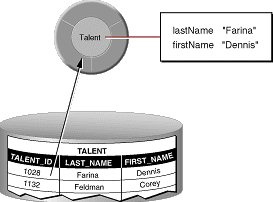
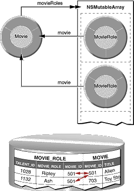

| PATH |

Enterprise objects make use of a separate file, known as a model, to specify a mapping between tables in the database and your classes of enterprise objects. This is formally called an entity-relationship (E-R) model. You use the EOModeler application to create and maintain these models. With EOModeler you can
A model represents a level of abstraction above the database. The database-to-objects mapping embodied in a model sets up a correspondence between database tables and enterprise objects classes; frequently, database rows map to instances of the appropriate class as shown in Figure 3-2.
Figure 3-2 Mapping between an enterprise object class and a single table
In actual practice, the mapping is more flexible than this. For example:
In addition to mapping tables to enterprise object classes and database columns to instance variables, WebObjects maps database primary and foreign keys to relationships between objects. WebObjects defines two types of relationships-to-ones and to-manys-which are both illustrated in Figure 3-3. The relationship a MovieRole has to its Movie is a to-one relationship, while the relationship a Movie has to its MovieRoles is a to-many.
Figure 3-3 Mapping relationships

© 2001 Apple Computer, Inc.